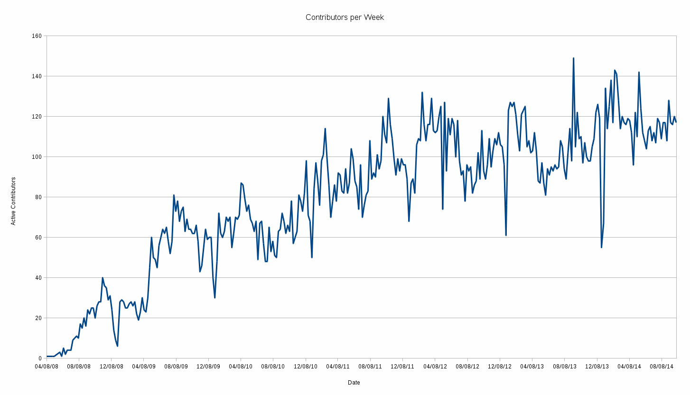

The Tumbleweed Factory
openSUSE development process
Stephan "Coolo" Kulow
coolo@suse.de
About openSUSE Tumbleweed
- Started and maintained by Greg Kroah-Hartman early 2011
- Not exactly a rolling distribution, but "rolling updates"
- Way more version updates than openSUSE updates
- Recent Kernel, GNOME, KDE, Libreoffice... in one repo
- Now obsolete by new Factory (using the proven name)
About openSUSE:Factory
- Biggest project on Open Build Service http://build.opensuse.org
- No freeze, constant development
- Base of openSUSE and upstream to SUSE Linux Enterprise
- Many development groups integrate within Factory
Worked decently well for a while

The problem of success
Submissions are not well tested

But we have a lot of them

In the end, we rely on the packager

Debugging afterwards is hard

Redefining our development model
- 12.2: delayed 2 months - collapse of old model
- 12.3: trying to throw more people at the problem -> ;-(
- 13.1: heavy development in openQA
- 13.2: openSUSE:Factory rolling - replacing Tumbleweed
Users love openQA (without knowing)
openSUSE 13.3
- No roadmap yet
- SUSE Linux Enterprise sources will be released soon into OBS
- Creating 13.3 as an hybrid between SLE base and Factory?
- Community discussion just started
So what happened?
Limiting the Impact
- Bootstrap packages (96)
- Minimal X installation (994)
- GNOME and KDE (857)
- Everything else (around 5800 atm)
Staging Projects

openqa.opensuse.org tests the DVDs

Requirements for Ring Packages
- Ignoring everything not in Rings
- All other ring packages have to build
- openQA needs to pass with 100% success
- Minimal X
- Encrypted LVM
- RAID 1
- GNOME
- KDE
- UEFI
- Update
Tumbleweed
Tumbleweed Dashboard
Publishing daily
- 54 snapshots in 6 months
- Roughly every day
- But no snapshot for 12 days in November
- (no harm done to users though)
Summary
- Staging projects have proven to be a great tool
- Automated testing brought steadly increasing quality
- We don't need alphas any more
- We have beta quality every day